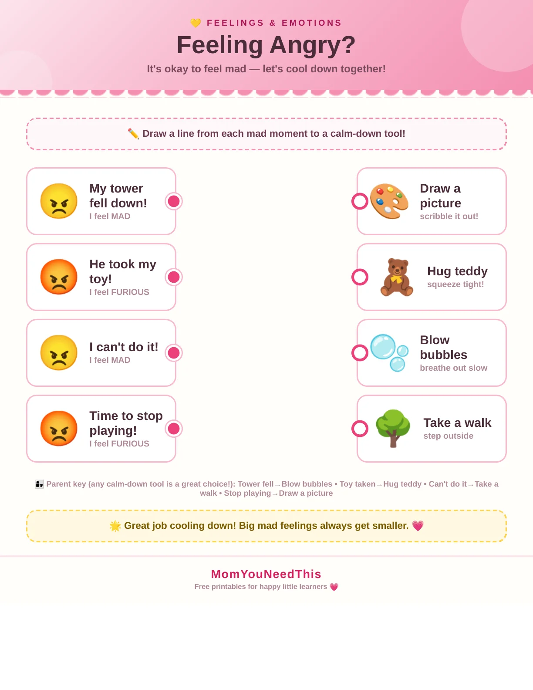

😡 Anger Activities Big Feelings, Calm Choices
Anger is a normal feeling — and little kids feel it big. These gentle activities help toddlers and preschoolers name their anger, understand it, and learn calm-down strategies that really work.
Quick Answer
This free printable anger activity helps toddlers and preschoolers (ages 2–5) learn about anger: naming the feeling, noticing what it does in the body (hot face, fast heart, tight fists), and practicing healthy ways to handle big mad feelings — calm-down breathing, squeezing, counting, walking away, and using words. The rule the pages teach: anger is always allowed; hurting is not. Download and print at home with no signup needed.
At a Glance
- Ages: Toddlers and preschoolers (ages 2–5)
- Activity: Naming anger and practicing calm-down strategies
- Skills: Emotional vocabulary and self-calming
- Format: Printable worksheet (PDF)
- Cost: Free, no signup
Anger is the feeling children get punished for most and taught about least — usually in the worst possible moment, mid-storm, when nobody can learn anything. These pages move the teaching to calm weather: name the feeling, map its body signals, and rehearse the calm-down moves while they are easy, so they exist when they are hard.
😡 Explore Anger Activities
Name the feeling of anger, practice calm-down breathing, and learn healthy ways to handle big mad feelings.
💡 How To Use This Activity
Print the calm-down activities and work through them while everyone is calm — that is when the learning sticks. Name the feeling faces together, practise the breathing page with slow, silly breaths, and keep the finished sheets somewhere visible. When a real storm hits, you will both already know the moves. The print button opens the full-size page in a new tab if you prefer to print from there.

🖨️ Download Your Free Anger Activities Printable
Name the feeling of anger, practice calm-down breathing, and learn healthy ways to handle big mad feelings. Print it out, grab the crayons, and you're ready — no signup needed.
⬇️ Download Free Printable 🖨️ Print🎁 Free printable for toddlers & preschoolers
🔥 Anger Is A Signal, Not A Problem
Anger arrives when something feels unfair, blocked or invaded — a tower knocked down, a toy taken mid-use, a plan changed without warning. It is a signal, carrying real information: “this matters to me.” The feeling itself is never the problem. What children need is not less anger but more options for what to do while it is happening.
The body announces it first: hot face, thumping heart, tight fists, loud voice, a body that wants to move fast. A child who can catch the announcement — “my fists are tight, I'm getting mad” — has found the exit ramp before the storm. The feelings faces on these pages teach exactly that early recognition.
The calm-down menu (practiced calm, used stormy): slow breaths — smell the flower, blow the candle; squeeze something that can take it — a pillow, a ball, their own hands; count slowly; stomp or run it out in a safe place; and the most powerful tool of all, words: “I'm mad. I was still using that.” A child holding a boundary with words is not being rude — that IS the kind choice, and it works better than grabbing ever did.
After the storm comes the repair: sorry where sorry is due, rebuilding what got knocked down, reconnecting with the person. Anger handled this way — felt, expressed safely, repaired — is not a behavior problem. It is emotional competence, and it is built one calm rehearsal at a time.
❓ Anger Activities FAQs
What activities are included in Anger Activities?
This page collects our free anger printables in one place: naming the feeling of anger, practicing calm-down breathing, and learning healthy ways to handle big mad feelings — squeezing, counting, moving, and using words. Download the printable below and start learning right away.
Are these activities really free?
Yes — every printable on MomYouNeedThis is 100% free to download and print. No signup, no payment, just tap the download button. Print the calm-down page for the wall or fridge — its moment of need will not pause for a printer. Print the calm-down page for the wall or fridge — its moment of need will not pause for a printer.
How do I use these activities with my child?
Print the calm-down activities and work through them while everyone is calm — that is when the learning sticks. Name the feeling faces together, practice the breathing page with slow, silly breaths, and choose a family calm-down spot. In a real storm, do not teach: keep everyone safe, stay close, and let the rehearsed menu do its work.